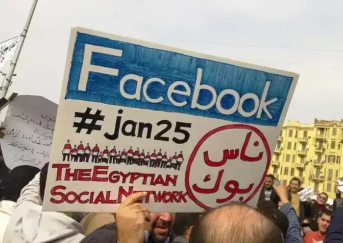
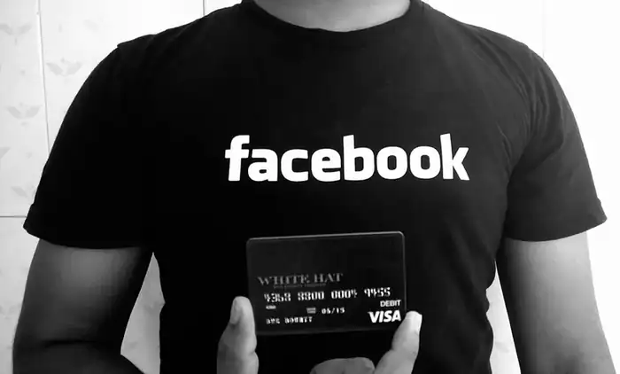

The research
Internal Facebook studies, disclosed in 2021 by the whistleblower Frances Haugen and reported by the Wall Street Journal, examined how Instagram affected teenage users, including body image and mental health, and found that a share of users reported harms.
Maps, diagrams and images




The response
The company disputed some characterisations and said it had made changes. The documents, congressional testimony and subsequent regulatory attention are documented, and the episode is a case study in how internal evidence becomes public.
The archive files it as documented.
Documented: the internal studies.
Documented: the disclosure and testimony.
Documented: the company's response.
Documented: the regulatory attention.
The label: documented.
Why it is in the archive
Because it is a case where the company's own research is the evidence.
More images
Open resources on this topic
- PapersOpen-access articles: DOAJ · PubMed Central · Internet Archive Scholar
- BooksPublic-domain and borrowable copies: Open Library · Project Gutenberg · Google Books · Internet Archive
Cite this page
Momin, S. (2026). Facebook's Teen Research. The Larger World Archive. https://drsamonline.github.io/LARGE_GLOBE/facebook-teen-research.htmlMomin, Sohil. “Facebook's Teen Research.” The Larger World Archive, 2026, https://drsamonline.github.io/LARGE_GLOBE/facebook-teen-research.html.Momin, Sohil. “Facebook's Teen Research.” The Larger World Archive, 2026. https://drsamonline.github.io/LARGE_GLOBE/facebook-teen-research.html.@misc{facebooks2026facebook,
author = {Momin, Sohil},
title = {Facebook's Teen Research},
year = {2026},
howpublished = {The Larger World Archive},
url = {https://drsamonline.github.io/LARGE_GLOBE/facebook-teen-research.html},
note = {Last reviewed 20 November 2026}
}Last reviewed 20 November 2026 · Corrections policy · this page is not peer reviewed
Sources for this page
- Wikipedia, “Frances Haugen” — the whistlebloweren.wikipedia.org
- Wikipedia, “Instagram” — the platformen.wikipedia.org
- Wikipedia, “Facebook Files” — the disclosureen.wikipedia.org
- Wikipedia, “Whistleblower” — the roleen.wikipedia.org